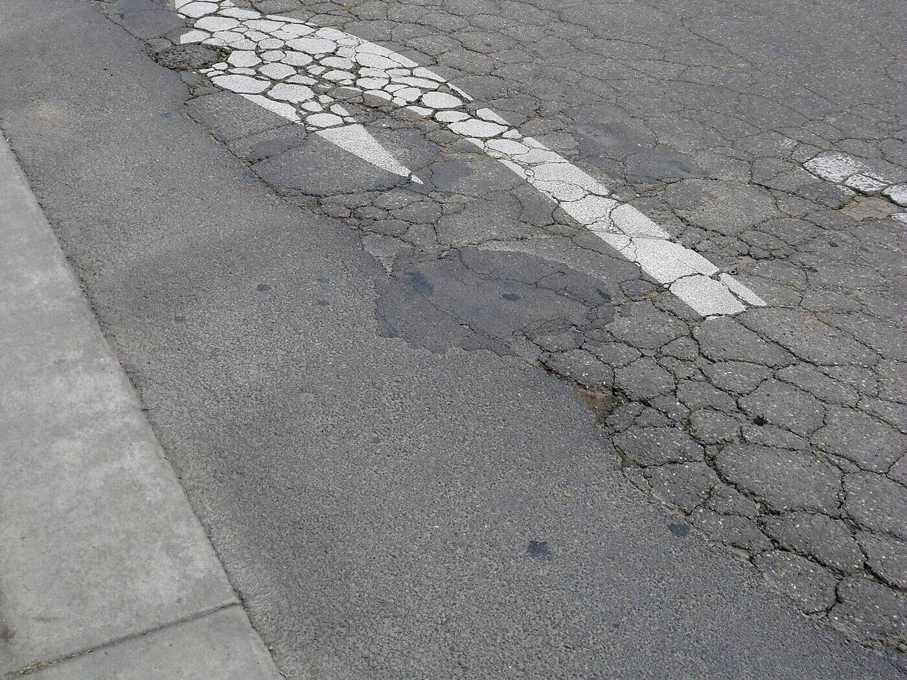

- Damage
- Pothole
- Where
- Lingnerallee, right lane
- Urgency
- Fix now
- First seen
- 3 weeks ago, as a crack
- Since last week
- Grown, now a hole
Sample entry. Every find has a photo, a location, an urgency rank and its history.

Holperfrei
Computer science students, TU Dresden · November 2026



A crew seals it with hot bitumen in a few minutes. No closed lane, no detour.
Water is getting in. A surface patch now stops frost from breaking it open next winter.
The asphalt has broken out. Cut the edges and refill, up to €200 per hole. The city is now liable.
Patches on patches. The whole stretch is milled and resurfaced, with the street closed for days.
Why early matters
Water gets into a crack, freezes, and breaks the asphalt apart. Damage grows slowly, then all at once.
Our idea
Low on the truck: one at the front, one on each side. Together they see the lane and both kerbs. The driver does nothing.
On board. Faces and number plates are blurred before anything leaves the truck.
Every crack and pothole, ranked by urgency.